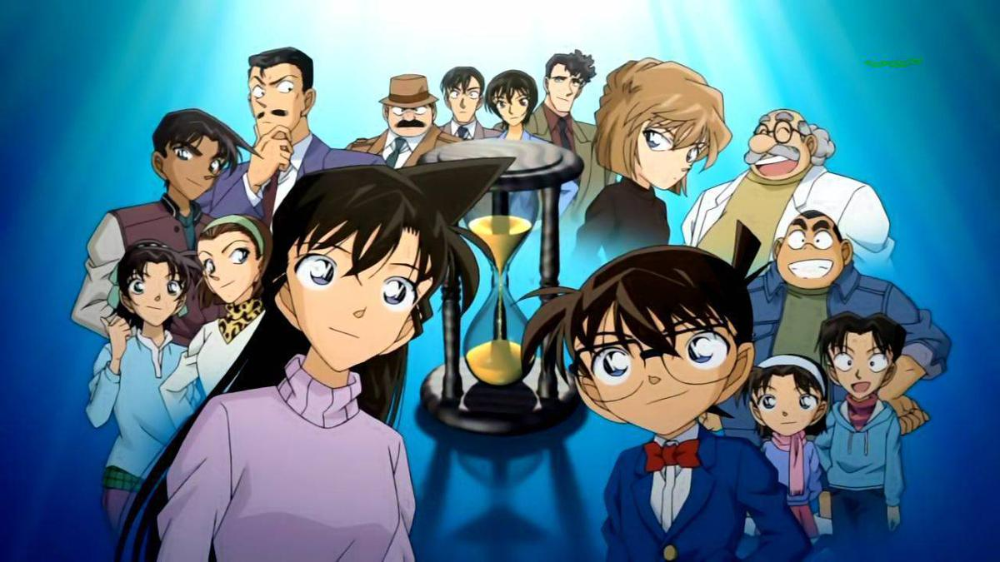
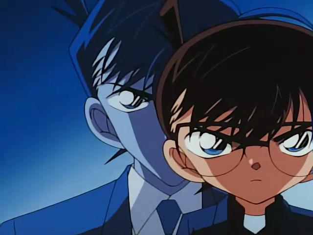

About Detective Conan
Shinichi Kudo is a high school student detective. He is often involved in serious cases, especially those investigated by Kogoro Mori, the father of his school mate, Ran Mori. One day when following a suspicious man, he got caught by this man's accomplice and got drugged with APTX-486. Soon after, Kudo's body got transformed into a kid. Then he was just like a 4th grader. He went to Professor Agasa's to find help.
Being able to identify this kid as Kudo, Professor Agasa invited him into his house. There he found a book written by Sir Arthur Conan Doyle and used this name for his new identity as a kid. Avoiding recognized by Ran as Kudo's, he wears glasses to cover his face. Then a kid detective was born, his name is Conan Edogawa or everyone knows him as Detective Conan.

Conan's Characteristics
As a detective despite of his young age, Conan or Kudo definitely has following characteristics which make me admire him a lot:
- patient
- strong deductive skills
- persistent
- strong memory
- follows the case until the very end

Conan's Friends and Family
Not alone, Detective Conan has these people helping him solve cases or sometimes just lead him to them. It's so much fun to always have good people following you around:
- Professor Agasa: The first person to know that Conan is Kudo. A bright-yet-clumsy professor whose inventions help Conan a lot but sometimes function differently than designed.
- Ran Mori: Kudo's close girl friend since they where kids, a Karate athlete.
- Kogoro Mori: Ran Mori's father, a private detective.
- Inspector Megure: A police inspector at Beika Police Station.
- Officer Wataru Takagi: Police officers at Beika Police Station.
- Genta, Ayumi, Mitsuhiko: Conan's classmates who like to play detectives but sometimes help more than the real police. They often lead Conan to cases in a bright peaceful day.
- Ai Haibara: A researcher who developed APTX-486 that turned Kudo's body to Conan. She took the same drug deliberately to hide from the organization she once belonged to.
- Eri Kisaki: Ran's mother, also Kogoro's wife. A famous private lawyer.
- Yusaku Kudo: Shinichi's father, a wellknown mystery writer.
- Yukiko Kudo: Shinichi's mother, an actrist.
- Sonoko Suzuki: Ran's school friend. She comes from a typoon family. Her family's wealth and network sometime help solving the case.
- Heiji Hattori: Also a high school student detective. A friend of Kudo since they were kids.
- Kazuha Toyama: Heiji's close girl friend. Just like Ran and Kudo, they were also friends since kids.